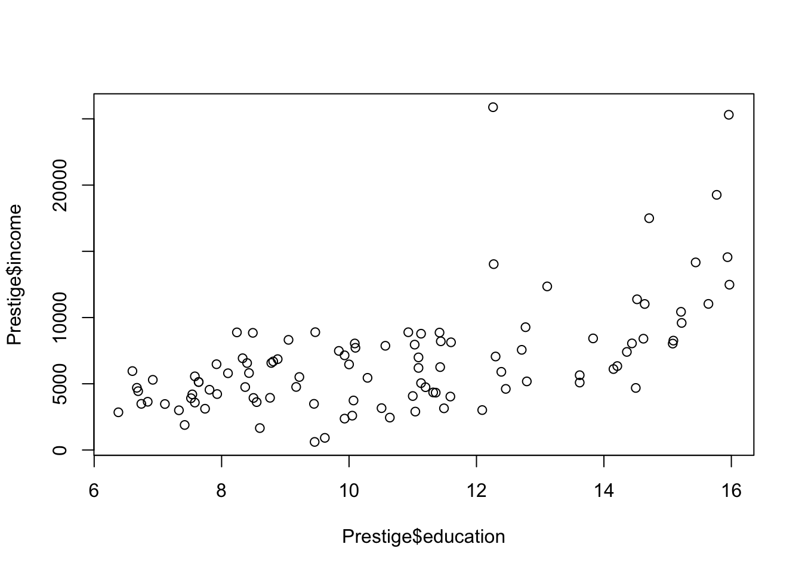

Chapter 2 Introduction to R
2.1 Part 1: Vector
Define variable / vector
2.1.1 Numbers
# Type in a numerical data, assign them to the variable: weight
weight = c(60,72,57,90,95,72)
# Print out the variable
weight## [1] 60 72 57 90 95 72# You can also type in decimals
height = c(1.75,1.80,1.65,1.90,1.74,1.91)
# Or even formulas, assign to the variable.
bmi = weight/(height)^2
bmi## [1] 19.59184 22.22222 20.93664 24.93075 31.37799 19.736302.1.2 Strings (nominal)
# Characters between the quotation marks are consider strings
A = c("NewYork","London","San Francisco")
A## [1] "NewYork" "London" "San Francisco"2.1.3 Logical
# A logical vector is a vector that only contains TRUE and FALSE values. In R, true values are designated with TRUE, and false values with FALSE.
B=c(T,T,F,F)
B## [1] TRUE TRUE FALSE FALSEbmi > 25 # relational expressions## [1] FALSE FALSE FALSE FALSE TRUE FALSE2.1.4 Create vectors
seq(4,9) #sequence from 4 to 9, increment defaults to 1, alternatively, 4:9## [1] 4 5 6 7 8 9seq(4,10,2) #sequence from 4 to 10, increment is 2## [1] 4 6 8 10seq(1,10,.1) #sequence from 1 to 10, increment is .1## [1] 1.0 1.1 1.2 1.3 1.4 1.5 1.6 1.7 1.8 1.9 2.0 2.1 2.2 2.3 2.4
## [16] 2.5 2.6 2.7 2.8 2.9 3.0 3.1 3.2 3.3 3.4 3.5 3.6 3.7 3.8 3.9
## [31] 4.0 4.1 4.2 4.3 4.4 4.5 4.6 4.7 4.8 4.9 5.0 5.1 5.2 5.3 5.4
## [46] 5.5 5.6 5.7 5.8 5.9 6.0 6.1 6.2 6.3 6.4 6.5 6.6 6.7 6.8 6.9
## [61] 7.0 7.1 7.2 7.3 7.4 7.5 7.6 7.7 7.8 7.9 8.0 8.1 8.2 8.3 8.4
## [76] 8.5 8.6 8.7 8.8 8.9 9.0 9.1 9.2 9.3 9.4 9.5 9.6 9.7 9.8 9.9
## [91] 10.0seq(-8,9,.5) #sequence from -8 to 9, increment is .5## [1] -8.0 -7.5 -7.0 -6.5 -6.0 -5.5 -5.0 -4.5 -4.0 -3.5 -3.0 -2.5 -2.0 -1.5 -1.0
## [16] -0.5 0.0 0.5 1.0 1.5 2.0 2.5 3.0 3.5 4.0 4.5 5.0 5.5 6.0 6.5
## [31] 7.0 7.5 8.0 8.5 9.02.1.5 Replicate values
ha=c(1,2,3,"sun")
rep(ha,4) #repeat "ha" four times## [1] "1" "2" "3" "sun" "1" "2" "3" "sun" "1" "2" "3" "sun"
## [13] "1" "2" "3" "sun"rep(ha,1:4) #each element is repeated different times, according to the second argument## [1] "1" "2" "2" "3" "3" "3" "sun" "sun" "sun" "sun"rep(3:4,c(100,200)) #the first element repeat 100 time, the second 200 times## [1] 3 3 3 3 3 3 3 3 3 3 3 3 3 3 3 3 3 3 3 3 3 3 3 3 3 3 3 3 3 3 3 3 3 3 3 3 3
## [38] 3 3 3 3 3 3 3 3 3 3 3 3 3 3 3 3 3 3 3 3 3 3 3 3 3 3 3 3 3 3 3 3 3 3 3 3 3
## [75] 3 3 3 3 3 3 3 3 3 3 3 3 3 3 3 3 3 3 3 3 3 3 3 3 3 3 4 4 4 4 4 4 4 4 4 4 4
## [112] 4 4 4 4 4 4 4 4 4 4 4 4 4 4 4 4 4 4 4 4 4 4 4 4 4 4 4 4 4 4 4 4 4 4 4 4 4
## [149] 4 4 4 4 4 4 4 4 4 4 4 4 4 4 4 4 4 4 4 4 4 4 4 4 4 4 4 4 4 4 4 4 4 4 4 4 4
## [186] 4 4 4 4 4 4 4 4 4 4 4 4 4 4 4 4 4 4 4 4 4 4 4 4 4 4 4 4 4 4 4 4 4 4 4 4 4
## [223] 4 4 4 4 4 4 4 4 4 4 4 4 4 4 4 4 4 4 4 4 4 4 4 4 4 4 4 4 4 4 4 4 4 4 4 4 4
## [260] 4 4 4 4 4 4 4 4 4 4 4 4 4 4 4 4 4 4 4 4 4 4 4 4 4 4 4 4 4 4 4 4 4 4 4 4 4
## [297] 4 4 4 42.1.6 Practice Questions
2.1.6.1 Question 1
Create a sequence variable (name it with your first name) ranging from 1 to 100, increment is 2
2.1.6.2 Question 2
Create a variable (name it with your last name). repeat 5 by 50 times
2.1.6.3 Question 3
Calculate the ratios between the two variables as last/first, and multiply by 2.
2.2 Part 2: Basic Statistical Analysis
2.2.1 Buiding a simulated data set
# We use the following functions to build a simulated data set.
ACT_score <- round(runif(n=100,min=18,max=25),0)2.2.2 Basic Statistical function
# calculate summation
sum(ACT_score) ## [1] 2192# calculate average score
mean(ACT_score)## [1] 21.92# calculate median score
median(ACT_score) ## [1] 22# calculate variance
var(ACT_score) ## [1] 4.377374# calculate standard deviation
sd(ACT_score) ## [1] 2.092217# print vector length (sample size)
length(ACT_score) ## [1] 100# calculate square root of each number
sqrt(ACT_score) ## [1] 5.000000 5.000000 4.690416 4.358899 5.000000 4.582576 4.898979 4.795832
## [9] 4.242641 4.898979 4.582576 4.795832 4.795832 4.795832 4.690416 4.795832
## [17] 4.795832 4.242641 4.242641 4.472136 4.898979 4.358899 4.898979 4.795832
## [25] 4.242641 5.000000 5.000000 4.690416 4.472136 4.582576 4.358899 4.898979
## [33] 4.690416 4.795832 4.898979 4.690416 4.358899 4.898979 4.795832 4.690416
## [41] 5.000000 4.690416 4.582576 4.898979 4.582576 4.690416 4.795832 4.358899
## [49] 4.242641 4.690416 4.472136 4.795832 4.795832 4.795832 4.472136 4.690416
## [57] 5.000000 4.898979 4.795832 5.000000 4.898979 4.898979 4.358899 5.000000
## [65] 4.472136 4.795832 4.242641 4.795832 4.472136 4.358899 4.795832 4.690416
## [73] 4.795832 4.472136 4.690416 4.690416 4.582576 4.690416 4.795832 4.358899
## [81] 4.582576 4.582576 4.358899 5.000000 4.582576 4.898979 4.898979 4.795832
## [89] 4.898979 4.358899 4.582576 4.690416 4.472136 4.795832 4.472136 4.358899
## [97] 5.000000 4.690416 4.242641 4.582576#--with NA, print order of each number in the vector
order(ACT_score) ## [1] 9 18 19 25 49 67 99 4 22 31 37 48 63 70 80 83 90 96
## [19] 20 29 51 55 65 69 74 93 95 6 11 30 43 45 77 81 82 85
## [37] 91 100 3 15 28 33 36 40 42 46 50 56 72 75 76 78 92 98
## [55] 8 12 13 14 16 17 24 34 39 47 52 53 54 59 66 68 71 73
## [73] 79 88 94 7 10 21 23 32 35 38 44 58 61 62 86 87 89 1
## [91] 2 5 26 27 41 57 60 64 84 97# calculate range of the vector
range(ACT_score) ## [1] 18 25#--omit NA, sort date from low to hight
sort(ACT_score) ## [1] 18 18 18 18 18 18 18 19 19 19 19 19 19 19 19 19 19 19 20 20 20 20 20 20 20
## [26] 20 20 21 21 21 21 21 21 21 21 21 21 21 22 22 22 22 22 22 22 22 22 22 22 22
## [51] 22 22 22 22 23 23 23 23 23 23 23 23 23 23 23 23 23 23 23 23 23 23 23 23 23
## [76] 24 24 24 24 24 24 24 24 24 24 24 24 24 24 25 25 25 25 25 25 25 25 25 25 25#--make a table of counts
table(ACT_score) ## ACT_score
## 18 19 20 21 22 23 24 25
## 7 11 9 11 16 21 14 112.2.3 Practice Questions
Use the Data set bellow:
GRE_score <- round(runif(250,130,170),0)2.2.3.1 Question 1
Report summation of all reported scores.
2.2.3.2 Question 2
Report average score based on all reported scores
2.2.3.3 Question 3
Report median score based on all reported scores
2.2.3.4 Question 4
Report variance of all reported scores
2.2.3.5 Question 5
Reorder all scores
2.2.3.6 Question 6
Build a table of counts of each score
2.3 Part 3: Matrix Computation
2.3.1 Build a matrix
x=1:12
#set the dimension of the matrix
dim(x)=c(3,4)
x## [,1] [,2] [,3] [,4]
## [1,] 1 4 7 10
## [2,] 2 5 8 11
## [3,] 3 6 9 122.3.2 Define a matrix
# Different from the above matrix, we define a matrix use matrix function
matrix(1:12,nrow=3,byrow=T) ## [,1] [,2] [,3] [,4]
## [1,] 1 2 3 4
## [2,] 5 6 7 8
## [3,] 9 10 11 122.3.3 Name the rows/columns
rownames(); colnames()—-can be used to a data matrix
x=matrix(1:12, nrow=3,byrow=T)
rownames(x)=LETTERS[1:3]
colnames(x)=LETTERS[4:7]
x## D E F G
## A 1 2 3 4
## B 5 6 7 8
## C 9 10 11 122.3.4 Operation on matrix
# The transpose of a matrix is simply a flipped version of the original matrix. We can transpose a matrix by switching its rows with its columns.
t(x)## A B C
## D 1 5 9
## E 2 6 10
## F 3 7 11
## G 4 8 12#multiply two matrix, if they are conformable
x%*%t(x) ## A B C
## A 30 70 110
## B 70 174 278
## C 110 278 446t(x)%*%x## D E F G
## D 107 122 137 152
## E 122 140 158 176
## F 137 158 179 200
## G 152 176 200 2242.3.5 Glue vectors together
# Using cbind() function to combine columns
cbind(A=1:4,B=5:8,C=9:12)## A B C
## [1,] 1 5 9
## [2,] 2 6 10
## [3,] 3 7 11
## [4,] 4 8 12# Using rbind() function to combine rows
rbind(A=1:4,B=5:8,C=9:12)## [,1] [,2] [,3] [,4]
## A 1 2 3 4
## B 5 6 7 8
## C 9 10 11 122.3.6 Inverse the matrix
The inverse of a square matrix A, sometimes called a reciprocal matrix, is a matrix \(A^{-1}\) such that \(AA^{-1}=I\) , where \(I\) is the identity matrix.
[C] The fractions() need load “MASS” Package.
# Load the package "MASS" to use the fractions function
library(MASS)
# Build a square matrix A.
# A <- matrix(1:16, nrow=4,byrow=T)
# Print out
# A
#inverse the matrix
# solve(A,tol=1e-19)
#round
# round(solve(A,tol=1e-19),3) #to the third digits
#show as rationals
# fractions(solve(A,tol=1e-19))
# Q? solve equation
# Ax=b: solve(A,b)2.3.7 Practice Questions
2.3.7.1 Questions 1
Create a 2 by 2 matrix named “MM” with c(1,5,9,10) arranged by row
2.3.7.2 Questions 2
Please inverse the matrix “MM”
2.4 Part 4: Data Manipulation
2.4.1 Load the Data
# Load the package for illustrations
library(car)## Loading required package: carData# Load the data set
data(Prestige)
# Check the dimension of the data
dim(Prestige) # 102 observations, each observation has 6 variables.## [1] 102 6# subset the data
Prestige[1:10,1:3]## education income women
## gov.administrators 13.11 12351 11.16
## general.managers 12.26 25879 4.02
## accountants 12.77 9271 15.70
## purchasing.officers 11.42 8865 9.11
## chemists 14.62 8403 11.68
## physicists 15.64 11030 5.13
## biologists 15.09 8258 25.65
## architects 15.44 14163 2.69
## civil.engineers 14.52 11377 1.03
## mining.engineers 14.64 11023 0.94Prestige[,1:3]## education income women
## gov.administrators 13.11 12351 11.16
## general.managers 12.26 25879 4.02
## accountants 12.77 9271 15.70
## purchasing.officers 11.42 8865 9.11
## chemists 14.62 8403 11.68
## physicists 15.64 11030 5.13
## biologists 15.09 8258 25.65
## architects 15.44 14163 2.69
## civil.engineers 14.52 11377 1.03
## mining.engineers 14.64 11023 0.94
## surveyors 12.39 5902 1.91
## draughtsmen 12.30 7059 7.83
## computer.programers 13.83 8425 15.33
## economists 14.44 8049 57.31
## psychologists 14.36 7405 48.28
## social.workers 14.21 6336 54.77
## lawyers 15.77 19263 5.13
## librarians 14.15 6112 77.10
## vocational.counsellors 15.22 9593 34.89
## ministers 14.50 4686 4.14
## university.teachers 15.97 12480 19.59
## primary.school.teachers 13.62 5648 83.78
## secondary.school.teachers 15.08 8034 46.80
## physicians 15.96 25308 10.56
## veterinarians 15.94 14558 4.32
## osteopaths.chiropractors 14.71 17498 6.91
## nurses 12.46 4614 96.12
## nursing.aides 9.45 3485 76.14
## physio.therapsts 13.62 5092 82.66
## pharmacists 15.21 10432 24.71
## medical.technicians 12.79 5180 76.04
## commercial.artists 11.09 6197 21.03
## radio.tv.announcers 12.71 7562 11.15
## athletes 11.44 8206 8.13
## secretaries 11.59 4036 97.51
## typists 11.49 3148 95.97
## bookkeepers 11.32 4348 68.24
## tellers.cashiers 10.64 2448 91.76
## computer.operators 11.36 4330 75.92
## shipping.clerks 9.17 4761 11.37
## file.clerks 12.09 3016 83.19
## receptionsts 11.04 2901 92.86
## mail.carriers 9.22 5511 7.62
## postal.clerks 10.07 3739 52.27
## telephone.operators 10.51 3161 96.14
## collectors 11.20 4741 47.06
## claim.adjustors 11.13 5052 56.10
## travel.clerks 11.43 6259 39.17
## office.clerks 11.00 4075 63.23
## sales.supervisors 9.84 7482 17.04
## commercial.travellers 11.13 8780 3.16
## sales.clerks 10.05 2594 67.82
## newsboys 9.62 918 7.00
## service.station.attendant 9.93 2370 3.69
## insurance.agents 11.60 8131 13.09
## real.estate.salesmen 11.09 6992 24.44
## buyers 11.03 7956 23.88
## firefighters 9.47 8895 0.00
## policemen 10.93 8891 1.65
## cooks 7.74 3116 52.00
## bartenders 8.50 3930 15.51
## funeral.directors 10.57 7869 6.01
## babysitters 9.46 611 96.53
## launderers 7.33 3000 69.31
## janitors 7.11 3472 33.57
## elevator.operators 7.58 3582 30.08
## farmers 6.84 3643 3.60
## farm.workers 8.60 1656 27.75
## rotary.well.drillers 8.88 6860 0.00
## bakers 7.54 4199 33.30
## slaughterers.1 7.64 5134 17.26
## slaughterers.2 7.64 5134 17.26
## canners 7.42 1890 72.24
## textile.weavers 6.69 4443 31.36
## textile.labourers 6.74 3485 39.48
## tool.die.makers 10.09 8043 1.50
## machinists 8.81 6686 4.28
## sheet.metal.workers 8.40 6565 2.30
## welders 7.92 6477 5.17
## auto.workers 8.43 5811 13.62
## aircraft.workers 8.78 6573 5.78
## electronic.workers 8.76 3942 74.54
## radio.tv.repairmen 10.29 5449 2.92
## sewing.mach.operators 6.38 2847 90.67
## auto.repairmen 8.10 5795 0.81
## aircraft.repairmen 10.10 7716 0.78
## railway.sectionmen 6.67 4696 0.00
## electrical.linemen 9.05 8316 1.34
## electricians 9.93 7147 0.99
## construction.foremen 8.24 8880 0.65
## carpenters 6.92 5299 0.56
## masons 6.60 5959 0.52
## house.painters 7.81 4549 2.46
## plumbers 8.33 6928 0.61
## construction.labourers 7.52 3910 1.09
## pilots 12.27 14032 0.58
## train.engineers 8.49 8845 0.00
## bus.drivers 7.58 5562 9.47
## taxi.drivers 7.93 4224 3.59
## longshoremen 8.37 4753 0.00
## typesetters 10.00 6462 13.58
## bookbinders 8.55 3617 70.872.4.2 Select Specific Data
# put 1's in the first col., others in 2-4th
X=cbind(1,as.matrix(Prestige[,1:3]))
X## education income women
## gov.administrators 1 13.11 12351 11.16
## general.managers 1 12.26 25879 4.02
## accountants 1 12.77 9271 15.70
## purchasing.officers 1 11.42 8865 9.11
## chemists 1 14.62 8403 11.68
## physicists 1 15.64 11030 5.13
## biologists 1 15.09 8258 25.65
## architects 1 15.44 14163 2.69
## civil.engineers 1 14.52 11377 1.03
## mining.engineers 1 14.64 11023 0.94
## surveyors 1 12.39 5902 1.91
## draughtsmen 1 12.30 7059 7.83
## computer.programers 1 13.83 8425 15.33
## economists 1 14.44 8049 57.31
## psychologists 1 14.36 7405 48.28
## social.workers 1 14.21 6336 54.77
## lawyers 1 15.77 19263 5.13
## librarians 1 14.15 6112 77.10
## vocational.counsellors 1 15.22 9593 34.89
## ministers 1 14.50 4686 4.14
## university.teachers 1 15.97 12480 19.59
## primary.school.teachers 1 13.62 5648 83.78
## secondary.school.teachers 1 15.08 8034 46.80
## physicians 1 15.96 25308 10.56
## veterinarians 1 15.94 14558 4.32
## osteopaths.chiropractors 1 14.71 17498 6.91
## nurses 1 12.46 4614 96.12
## nursing.aides 1 9.45 3485 76.14
## physio.therapsts 1 13.62 5092 82.66
## pharmacists 1 15.21 10432 24.71
## medical.technicians 1 12.79 5180 76.04
## commercial.artists 1 11.09 6197 21.03
## radio.tv.announcers 1 12.71 7562 11.15
## athletes 1 11.44 8206 8.13
## secretaries 1 11.59 4036 97.51
## typists 1 11.49 3148 95.97
## bookkeepers 1 11.32 4348 68.24
## tellers.cashiers 1 10.64 2448 91.76
## computer.operators 1 11.36 4330 75.92
## shipping.clerks 1 9.17 4761 11.37
## file.clerks 1 12.09 3016 83.19
## receptionsts 1 11.04 2901 92.86
## mail.carriers 1 9.22 5511 7.62
## postal.clerks 1 10.07 3739 52.27
## telephone.operators 1 10.51 3161 96.14
## collectors 1 11.20 4741 47.06
## claim.adjustors 1 11.13 5052 56.10
## travel.clerks 1 11.43 6259 39.17
## office.clerks 1 11.00 4075 63.23
## sales.supervisors 1 9.84 7482 17.04
## commercial.travellers 1 11.13 8780 3.16
## sales.clerks 1 10.05 2594 67.82
## newsboys 1 9.62 918 7.00
## service.station.attendant 1 9.93 2370 3.69
## insurance.agents 1 11.60 8131 13.09
## real.estate.salesmen 1 11.09 6992 24.44
## buyers 1 11.03 7956 23.88
## firefighters 1 9.47 8895 0.00
## policemen 1 10.93 8891 1.65
## cooks 1 7.74 3116 52.00
## bartenders 1 8.50 3930 15.51
## funeral.directors 1 10.57 7869 6.01
## babysitters 1 9.46 611 96.53
## launderers 1 7.33 3000 69.31
## janitors 1 7.11 3472 33.57
## elevator.operators 1 7.58 3582 30.08
## farmers 1 6.84 3643 3.60
## farm.workers 1 8.60 1656 27.75
## rotary.well.drillers 1 8.88 6860 0.00
## bakers 1 7.54 4199 33.30
## slaughterers.1 1 7.64 5134 17.26
## slaughterers.2 1 7.64 5134 17.26
## canners 1 7.42 1890 72.24
## textile.weavers 1 6.69 4443 31.36
## textile.labourers 1 6.74 3485 39.48
## tool.die.makers 1 10.09 8043 1.50
## machinists 1 8.81 6686 4.28
## sheet.metal.workers 1 8.40 6565 2.30
## welders 1 7.92 6477 5.17
## auto.workers 1 8.43 5811 13.62
## aircraft.workers 1 8.78 6573 5.78
## electronic.workers 1 8.76 3942 74.54
## radio.tv.repairmen 1 10.29 5449 2.92
## sewing.mach.operators 1 6.38 2847 90.67
## auto.repairmen 1 8.10 5795 0.81
## aircraft.repairmen 1 10.10 7716 0.78
## railway.sectionmen 1 6.67 4696 0.00
## electrical.linemen 1 9.05 8316 1.34
## electricians 1 9.93 7147 0.99
## construction.foremen 1 8.24 8880 0.65
## carpenters 1 6.92 5299 0.56
## masons 1 6.60 5959 0.52
## house.painters 1 7.81 4549 2.46
## plumbers 1 8.33 6928 0.61
## construction.labourers 1 7.52 3910 1.09
## pilots 1 12.27 14032 0.58
## train.engineers 1 8.49 8845 0.00
## bus.drivers 1 7.58 5562 9.47
## taxi.drivers 1 7.93 4224 3.59
## longshoremen 1 8.37 4753 0.00
## typesetters 1 10.00 6462 13.58
## bookbinders 1 8.55 3617 70.87# select only the 4th column of the dataset: Prestige
y=Prestige[,4]
y## [1] 68.8 69.1 63.4 56.8 73.5 77.6 72.6 78.1 73.1 68.8 62.0 60.0 53.8 62.2 74.9
## [16] 55.1 82.3 58.1 58.3 72.8 84.6 59.6 66.1 87.2 66.7 68.4 64.7 34.9 72.1 69.3
## [31] 67.5 57.2 57.6 54.1 46.0 41.9 49.4 42.3 47.7 30.9 32.7 38.7 36.1 37.2 38.1
## [46] 29.4 51.1 35.7 35.6 41.5 40.2 26.5 14.8 23.3 47.3 47.1 51.1 43.5 51.6 29.7
## [61] 20.2 54.9 25.9 20.8 17.3 20.1 44.1 21.5 35.3 38.9 25.2 34.8 23.2 33.3 28.8
## [76] 42.5 44.2 35.9 41.8 35.9 43.7 50.8 37.2 28.2 38.1 50.3 27.3 40.9 50.2 51.1
## [91] 38.9 36.2 29.9 42.9 26.5 66.1 48.9 35.9 25.1 26.1 42.2 35.2# select the first five subjects with all columns
X[1:5,] ## education income women
## gov.administrators 1 13.11 12351 11.16
## general.managers 1 12.26 25879 4.02
## accountants 1 12.77 9271 15.70
## purchasing.officers 1 11.42 8865 9.11
## chemists 1 14.62 8403 11.68#select variables ("education" ,"prestige") and the first five subjects
Prestige[1:5,c("prestige","education")] ## prestige education
## gov.administrators 68.8 13.11
## general.managers 69.1 12.26
## accountants 63.4 12.77
## purchasing.officers 56.8 11.42
## chemists 73.5 14.622.4.3 Correlation and Covariate Matrix
# Calculate the correlations among three variables
R=cor(cbind(Prestige$education,Prestige$income,Prestige$women))
R # Correlation matrix## [,1] [,2] [,3]
## [1,] 1.00000000 0.5775802 0.06185286
## [2,] 0.57758023 1.0000000 -0.44105927
## [3,] 0.06185286 -0.4410593 1.00000000plot(Prestige$education,Prestige$income)
# Calculate the covariance among three variables
S =cov(cbind(Prestige$education,Prestige$income,Prestige$women))
S # Covariance matrix## [,1] [,2] [,3]
## [1,] 7.444408 6691.13 5.353965
## [2,] 6691.129509 18027855.55 -59411.383661
## [3,] 5.353965 -59411.38 1006.4712232.4.4 Matrix Diagonals
# extract diagonal of R (correlation matrix)
diag(R) ## [1] 1 1 1# set diagonal of R
diag(R)=NA
# make diagonal matrix
diag(1:3) ## [,1] [,2] [,3]
## [1,] 1 0 0
## [2,] 0 2 0
## [3,] 0 0 3# order-3 identity matrix
diag(3)## [,1] [,2] [,3]
## [1,] 1 0 0
## [2,] 0 1 0
## [3,] 0 0 12.4.5 Practice Questions
2.4.5.1 Question 1
Subsetting: select the 10 subjects with IDs from 11 to 20, under two variables:women and education.
2.4.5.2 Question 2
Calculate the correlation and covariance between the two variables:women and education
2.4.5.3 Question 3
Extract the diagonal elements of the covariance matrix
2.4.5.4 Question 4
Calculate the inverse matrix of the covariance matrix
2.5 Part 5: Factor, List, and Dataframe
2.5.1 Factors
Categorical variables whose input are numeric: “factors” Terminology: a factor has a set of “levels”
## build a continuous variable
pain=c(0,3,2,2,1)
## set the level of pain as a factor
fpain=factor(pain,levels=0:3) ## categorical has a order: ordinal scale
## rename the factors of our "fpain" variable
levels(fpain)=c("none","mild","medium","sever")
# Print pain (show as only numbers)
pain## [1] 0 3 2 2 1# Print fpain (show as categorical names)
fpain## [1] none sever medium medium mild
## Levels: none mild medium sever# Turn the categorizes into numbers
as.numeric(fpain)-1## [1] 0 3 2 2 1# Check the levels of a variable
levels(fpain)## [1] "none" "mild" "medium" "sever"# Internally, the 4-level factor above consists of 2 items
# (a)a vector of integers between 1 and 4
# (b)a character vector of length 4 containing strings describing what the 4 levels are2.5.2 Building a list
Lists are the R objects which contain elements of different types like − numbers, strings, vectors and another list inside it. A list can also contain a matrix or a function as its elements. List is created using list() function.
# Combine a collection of objects into a larger composite object.
# Generate two vectors with Exam scores
exam1=c(50,60,72,92,83,89,58,81)
exam2=c(60,71,84,94,95,90,77,87)
# Give names to the objects
# Build a list containing both exams
scores=list(midterm=exam1,final=exam2)
# print the composite object
scores## $midterm
## [1] 50 60 72 92 83 89 58 81
##
## $final
## [1] 60 71 84 94 95 90 77 87# You can use "$" sign to extract the specific object in a list
# extract named components
scores$final## [1] 60 71 84 94 95 90 77 872.5.3 Building a Dataframe
# Building a data frame using exam data we previously created
d=data.frame(exam1,exam2)
#the data are paired, the same student has a midterm and a final score
d ## exam1 exam2
## 1 50 60
## 2 60 71
## 3 72 84
## 4 92 94
## 5 83 95
## 6 89 90
## 7 58 77
## 8 81 87# Use the "$" sign extract columns from a data frame
d$exam1 ## [1] 50 60 72 92 83 89 58 812.5.4 Indexing (subsetting) Dataset
# Select the 4th element in vector exam1
exam1[4] ## [1] 92# The 1st,3rd,6th,7th element of "exam1"; alternatively
exam2[c(1,3,6,7)] ## [1] 60 84 90 77# Build an indexing vector "v"
v=c(1,3,6,7)
# Select the indexing elements of "v" from data exam2
exam2[v]## [1] 60 84 90 77# Select the first 6 elements
exam2[1:6]## [1] 60 71 84 94 95 90# Select all the elements except the positions specified in v
exam2[-v]## [1] 71 94 95 87# Conditional selection
exam2[exam1>=60]## [1] 71 84 94 95 90 87# Select all the exam2 scores where exam 1's scores either less than 70, or larger than 90.
exam2[exam1<70 |exam1>90] # "|"means "or"## [1] 60 71 94 77# Select all the exam2 scores where exam 1's scores between 70 to 79.
exam2[exam1>=70 & exam1<80] # & means "and"## [1] 842.5.5 More examples on indexing dataset
# We will use the same data frame d.
d=data.frame(exam1,exam2)
# The element in the 5th row, 1st column
d[5,1]## [1] 83# The vector in the 5th row
d[5,] ## exam1 exam2
## 5 83 95d[d$exam1>90,]## exam1 exam2
## 4 92 94# Conditional selection with logical outcome
lo=d$exam1>60
lo## [1] FALSE FALSE TRUE TRUE TRUE TRUE FALSE TRUE# Use a logical vector as the indexing vector
d[lo,] ## exam1 exam2
## 3 72 84
## 4 92 94
## 5 83 95
## 6 89 90
## 8 81 872.5.6 Subset and transform data
# Use the previous exam data set we created.
d## exam1 exam2
## 1 50 60
## 2 60 71
## 3 72 84
## 4 92 94
## 5 83 95
## 6 89 90
## 7 58 77
## 8 81 87# Subset the dataset where the exam1 scores are larger than 60
d2=subset(d,exam1>60)
d2## exam1 exam2
## 3 72 84
## 4 92 94
## 5 83 95
## 6 89 90
## 8 81 87# Adding a new column "exam1bonus" using transform function
d3=transform(d,exam1bonus=exam1+5)
d3## exam1 exam2 exam1bonus
## 1 50 60 55
## 2 60 71 65
## 3 72 84 77
## 4 92 94 97
## 5 83 95 88
## 6 89 90 94
## 7 58 77 63
## 8 81 87 862.5.7 Practice Questions
2.5.7.1 Question 1
subset Prestige dataset for subjects whose income is higher than 10,000 without using the “subset” function
2.5.7.2 Question 2
subset Prestige dataset for subjects whose income is higher than 10,000 with using the “subset” function
2.5.7.3 Question 3
subset Prestige dataset for subjects whose income is higher than 10,000 and who are professors without using the “subset” function
2.6 Part 6: Splitting data & implicit loops
2.6.1 Splitting the data
# Type in the data set with two variables "time" and "status"
# Time means study hours that students spent on studying
# Status is an indicator showing whether a candidate pass or fail the exam
time=c(9.2,7,7.1,8.2,10.1,11,9.3,4.5,6.6,7.9,10.8,7.8,8.3)
status=c("pass","fail","fail","fail","fail","pass","fail","fail","pass","pass","fail","pass","fail")
# Combine two variables into data frame "rate"
rate=data.frame(time,status)
# filter out how much time do participants spent when they passed the exams.
sta.pass=rate$time[rate$status=="pass"]
sta.pass## [1] 9.2 11.0 6.6 7.9 7.8### ? what is the meaning of this line
sta.fail=rate$time[rate$status=="fail"]
sta.fail## [1] 7.0 7.1 8.2 10.1 9.3 4.5 10.8 8.32.6.2 Function “apply”
# Use ?+function name to check the help document of certain function
?matrix
# Use function "matrix" and "rnorm" to build a random function
m=matrix(rnorm(12),nrow =4)
m## [,1] [,2] [,3]
## [1,] -0.6221595 1.00334835 -0.134728152
## [2,] -0.1567425 0.06355999 -0.650259742
## [3,] 0.2533000 -1.18481177 1.050341226
## [4,] 0.7057940 1.03092912 0.006464692# Select the minimum value column wise
apply(m,2,min) ## [1] -0.6221595 -1.1848118 -0.6502597# the second argument: 1 is set to "row", 2 is set to "column"
# the function min() is applied to each column
# Select the minimum value row wise
apply(m,1,min) ## [1] -0.622159463 -0.650259742 -1.184811772 0.0064646922.6.3 Another example
# Generate a matrix x
x <- cbind(x1 = rep(3,8), x2 = c(4:1, 2:5))
# Give rownames:a to h
dimnames(x)[[1]] <- letters[1:8]
# Use function sum() apply to each column
col.sums <- apply(x, 2, sum)
# Use function sum() apply to each row
row.sums <- apply(x, 1, sum)
# Generate a table for the row sums, column sums and grand total
rbind(cbind(x, Rtot = row.sums), Ctot = c(col.sums, sum(col.sums)))## x1 x2 Rtot
## a 3 4 7
## b 3 3 6
## c 3 2 5
## d 3 1 4
## e 3 2 5
## f 3 3 6
## g 3 4 7
## h 3 5 8
## Ctot 24 24 482.6.4 Use function “lapply”
The function lapply() applies over a list or a vector
# Build a list
x <- list(a = 1:10, beta = exp(-3:3), logic = c(TRUE,FALSE,FALSE,TRUE))
# Compute the list mean for each list element
lapply(x,mean)## $a
## [1] 5.5
##
## $beta
## [1] 4.535125
##
## $logic
## [1] 0.5# Quantiles for each list element 0.25 0.50 0.75
lapply(x, quantile, probs = 1:3/4) ## $a
## 25% 50% 75%
## 3.25 5.50 7.75
##
## $beta
## 25% 50% 75%
## 0.2516074 1.0000000 5.0536690
##
## $logic
## 25% 50% 75%
## 0.0 0.5 1.02.7 Part 7: conditional statement
2.7.1 if statement
If statements tell R to run a line of code if a condition returns TRUE. An if statement is a good choice here because it allows us to control which statement is printed depending on which outcome occurs.
# We use the previous data "rate" Part 6
rate## time status
## 1 9.2 pass
## 2 7.0 fail
## 3 7.1 fail
## 4 8.2 fail
## 5 10.1 fail
## 6 11.0 pass
## 7 9.3 fail
## 8 4.5 fail
## 9 6.6 pass
## 10 7.9 pass
## 11 10.8 fail
## 12 7.8 pass
## 13 8.3 fail# use the if function to check the first participant's pass/fail condition
if (rate[1,2]=="pass"){
print("You are awesome!")
}## [1] "You are awesome!"2.7.2 Adding an else
# use the if function to check the second participant's pass/fail condition
if (rate[2,2]=="pass"){
print("You are awesome!")
} else {
print("Working harder")
} ## [1] "Working harder"2.7.3 Customize further: else if
The else if statement allows you to further customize your control structure. You can add as many else if statements as you like.
# This time we check the participant's studying time from "rate" data.
# Check the first participant's studying time
if(rate[1,1]<=7){
print("Study More")
} else if (rate[1,1]>7 & rate[1,1]<11){
print("No pain No gain!")
} else if (rate[1,1]>=11) {
print("You are on fire！")
}## [1] "No pain No gain!"2.7.4 Use “for” loop
# Use the for loop to check whether they pass the exam
for (i in 1:nrow(rate)) {
if (rate[i,2]=="pass"){
print("You are awesome!")
} else {
print("Working harder")
}
}## [1] "You are awesome!"
## [1] "Working harder"
## [1] "Working harder"
## [1] "Working harder"
## [1] "Working harder"
## [1] "You are awesome!"
## [1] "Working harder"
## [1] "Working harder"
## [1] "You are awesome!"
## [1] "You are awesome!"
## [1] "Working harder"
## [1] "You are awesome!"
## [1] "Working harder"# Use the for loop to check how much time they spent on studying
for (i in 1:nrow(rate)){
if(rate[i,1]<=7){
print("Study More")
} else if (rate[i,1]>7 & rate[i,1]<11){
print("No pain No gain!")
} else if (rate[i,1]>=11) {
print("You are on fire！")
}
}## [1] "No pain No gain!"
## [1] "Study More"
## [1] "No pain No gain!"
## [1] "No pain No gain!"
## [1] "No pain No gain!"
## [1] "You are on fire！"
## [1] "No pain No gain!"
## [1] "Study More"
## [1] "Study More"
## [1] "No pain No gain!"
## [1] "No pain No gain!"
## [1] "No pain No gain!"
## [1] "No pain No gain!"